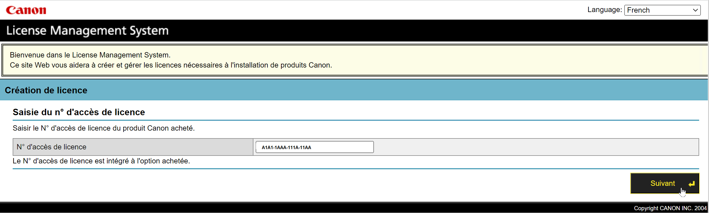
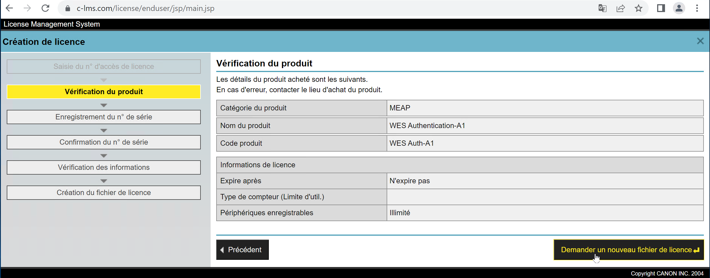
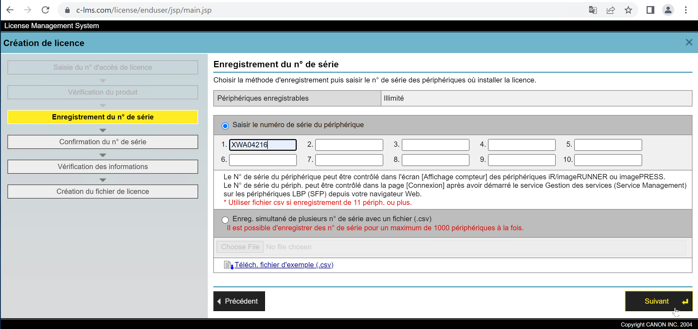
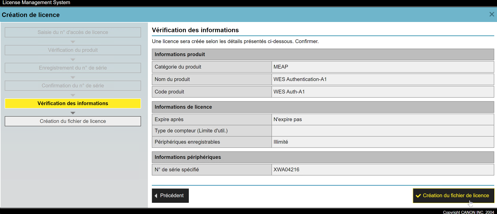
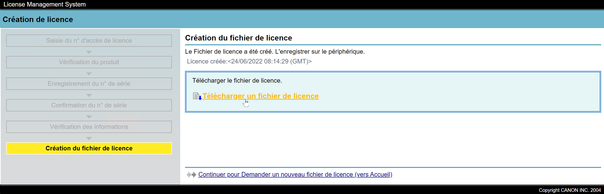
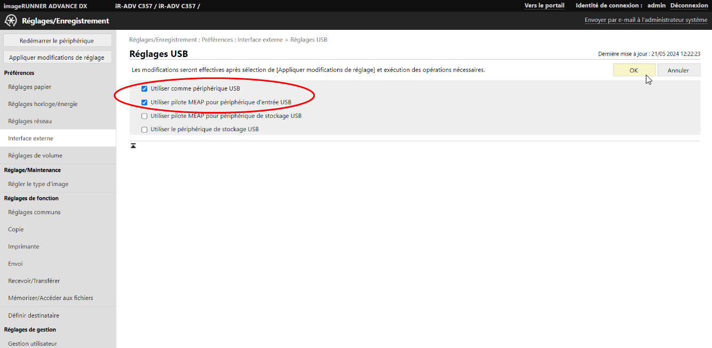

WES Canon - Prérequis et configuration préalable
Configurer les ports
Les ports réseau à ouvrir pour permettre le fonctionnement des WES sont les suivants :
| Source | Port | Protocole | Cible |
| Service Watchdoc | TCP 8000 TCP 8443 |
HTTP HTTPS |
Périphérique d'impression |
Modèles compatibles
Le WES Canon v.3 est compatible avec les périphériques supportant la technologie MEAP (périphériques de type iR-ADV).
Par ailleurs, afin de gérer les droits d’accès, le périphérique doit aussi être compatible AMS (Access Management System). Si le périphérique ne répond pas à cette condition, la gestion de droits d’accès ne sera pas fonctionnelle.
Prérequis de licences
La configuration du WES Canon MEAP doit être précédée d'une opération de téléchargement de fichiers de licences pour les applications Authentification et Impression à la demande de Watchdoc.
Procédure
Télécharger le fichier de licence pour l'application WES Authentification
-
Rendez-vous sur le site de Canon https://c-lms.com/license/enduser/portal/LAInput.jsp.
-
Dans l'interface Licence Management System > Création de licence, dans le champ N° d'accès de licence, saisissez l'identifiant correspondant à l'application Auth. fourni par Doxense (série de 4x4 caractères alphanumériques séparés par un tiret), puis cliquez sur Suivant ;

-
dans l'interface Vérification du produit, cliquez sur le bouton Demander un nouveau fichier de licence ;

-
dans l'interface Enregistrement du n° de série, saisissez le ou les numéros des périphériques sur lesquels le WES sera installé, puis cliquez sur Suivant.
Au-delà de 10 périphériques concernés, il convient d'importer les numéros de série enregistrés dans un fichier .csv (cf. modèle proposé à télécharger) ;
-
Confirmez le(s) numéro(s) de série, puis cliquez sur Suivant ;
-
Dans l'interface Vérification des informations, cliquez sur le bouton Création du fichier de licence après avoir validé les informations saisies :

-
Téléchargez le fichier de licence généré dans votre environnement de travail :

-
Vous pouvez le renommer pour l'identifier comme fichier de licence de l'application WES Authentification.
-
Cliquez sur Continuer pour demander un nouveau fichier (pour la deuxième application PullPrint).
Télécharger le fichier de licence pour l'application WES Impression à la demande
Procédez de la même manière que pour le précédent fichier.
-
Dans l'interface Licence Management System,dans le champ N° d'accès de licence, saisissez l'identifiant correspondant à l'application PullPrint fourni par Doxense (série de 4x4 caractères alphanumériques séparés par un tiret), puis procédez comme pour le fichier de licence de l'application Authentification (cf. ci-dessus).
-
Dans l'interface Création de licence, cliquez sur le bouton Demander un nouveau fichier de licence.
-
Dans l'interface Enregistrement du n° de série, saisissez le ou les numéros des périphériques sur lesquels le WES sera installé, puis cliquez sur Suivant. Au-delà de 10 périphériques concernés, il convient d'importer les numéros de série enregistrés dans un ficheir .csv) .
-
Dans l'interface Vérification des informations, cliquez sur le bouton Création du fichier de licence après avoir validé les informations saisies.
-
Téléchargez le fichier de licence généré dans votre environnement de travail.
-
Une fois les 2 fichiers de licence téléchargés, pour pouvez quitter le site Canon®.
Configuration préalable du périphérique
Activer les paramètres USB pour le lecteur de badges
Si le périphérique d'impression autorise la connexion de périphériques de stockage ou d'un lecteur de badges USB, il convient de configurer les paramètres USB :
-
accédez à l'interface de configuration du périphérique d'impression en tant qu'administrateur ;
-
rendez-vous dans le menu Réglages / Enregistrement > Préférences > Interface externe.
-
cliquez sur Réglages USB.
-
cochez les cases :
-
Utiliser comme périphérique USB
-
Utiliser pilote MEAP pour périphérique d'entrée USB

-
-
cliquer sur OK pour valider la configuration.